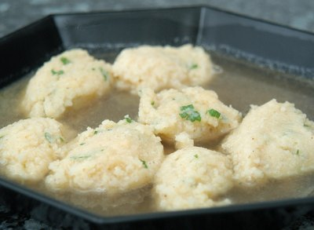

| Zutaten für 4 Personen: | |
| 100 g | Griess |
| 1 - 2 l | Bouillon |
| 2EL | Butter oder Margarine |
| 1 | Ei |
| 2 TL | Petersilie |
| Salz, Muskat | |
| 0.5 dl | Milch |
| Reibkäse | |
Butter mit Ei gut schaumig rühren.
Milch zugeben, gehackten Petersilie beifügen und mit Salz und Muskat würzen. Griess einstreuen und gut rühren.
30 Minuten quellen lassen.
Von dieser Masse mit einem Teelöffel Klösschen abstechen, in die siedende Bouillon geben und ein paar Minuten gar ziehen lassen.
Sofort mit geriebenem Käse servieren.
Herbert Eigenmann, Code: GRN
getestet am 15.4.95
Schmeckt auch am 28.7.2009 ganz so wie Griessnockerl halt so schmecken: Ganz OK. RE
@LINKBACK_TAG@ @WAKELOCK@